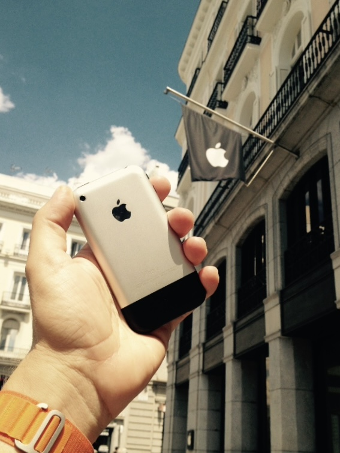

2007 · The First iPhone Project
El primer iPhone. Una cámara de 2 megapíxeles. Apuntar y disparar.

Este proyecto nace después de fotografiar con un iPhone 4S y de una pregunta inevitable: ¿cómo sería hacerlo con el primer iPhone?
Presentado en 2007, aquel dispositivo cambió para siempre nuestra relación con el teléfono y, con el tiempo, también nuestra manera de hacer fotografías. Sin embargo, su cámara estaba muy lejos de lo que hoy entendemos por una cámara móvil.
Un único sensor de 2 megapíxeles. Sin cámara frontal, flash, vídeo ni enfoque automático. Tampoco permitía elegir el punto de enfoque, corregir la exposición o editar la imagen después de tomarla. La cámara decidía prácticamente todo. Solo quedaba encuadrar y disparar.
Fotografiar así resulta extrañamente complejo. Las cámaras actuales corrigen el movimiento, recuperan luces y sombras, combinan varias exposiciones y procesan cada imagen antes incluso de que aparezca en la pantalla. Con el primer iPhone no existe esa red de seguridad.
Cada fotografía conserva sus limitaciones: poca resolución, escaso rango dinámico, dificultad con la luz y un nivel de detalle que hoy parece mínimo. No son defectos que este proyecto trate de esconder, sino las condiciones desde las que debe construirse la imagen.
Volver al primer iPhone es regresar a una cámara elemental. Una cámara que no ofrece controles ni soluciones y que obliga a prestar atención a lo único que todavía depende de quien fotografía: dónde colocarse, cuándo disparar y qué merece ser visto.
La cámara lo decide casi todo.
La mirada, todavía no.
Cargando colecciones...